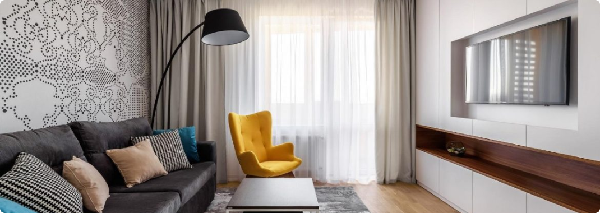

Володар перснів
Історія відбувається в контексті історичних подій північно-західного Середзем'я. Задовго до початку роману, в 1600 році Другої епохи, Темний Володар Саурон викував Єдиний Перстень, щоб здобути владу над іншими перснями, які перебувають в руках вождів людей, ельфів та гномів. Він зазнає поразки в битві 3441 року Другої епохи, й Ісілдур, син Еленділа, відрубує Перстень разом з пальцем і називає його сімейною реліквією. Пізніше Ісілдура вбивають орки, а Перстень губиться в ріці Андуїн. Через дві тисячі років Перстень потрапляє до рук гобіта Деаґола, а від нього — до Смеаґола, який вбиває свого друга і відбирає Перстень. Смеаґола виганяють з селища, і він ховається в глибині гір, де за сотню років під впливом Персня перетворюється на жалюгідне, зіпсоване створіння — Ґолума. Згодом він губить Перстень, котрого, як про це оповідається в «Гобіті», знаходить Більбо Беґінз. Тим часом Саурон набуває нової фізичної форми і відвойовує Мордор, своє колишнє володіння. Ґолум вирушає на пошуки Персня, але потрапляє в полон до Саурона, який довідується від нього, що Перстень в Більбо Беґінза. Ґолума відпускають, а Саурон, якому потрібен Перстень, щоб повернути собі абсолютну владу, шле своїх темних, страхітливих слуг Назґулів відібрати Перстень.
Роман починається в Ширі, з моменту, коли Фродо Беґінз успадковує Перстень від Більбо, свого дядька і наставника. Обидвоє нічого не знають про його походження, але чарівник Ґандалф Сірий з'ясовує історію Персня і радить Фродо винести його з Ширу. Фродо покидає Шир, взявши з собою за супутників свого садівника і друга Семвайза Ґемджі та двох кузенів, Меріадока Брендібака і Переґріна Тука. Ще в Ширі вони мало не наражаються на Назґулів, але відриваються від переслідувачів, пішовши напрямки через Праліс, де їм допомагає таємничий і могутній Том Бомбадил, на якого Перстень явно не має впливу. Вийшовши з лісу, вони зупиняються в селищі Брі, де знайомляться з Араґорном, спадкоємцем Ісілдура, який приєднується до них в ролі провідника й охоронця. Вони втікають з Брі, ледве уникнувши нападу, але Назґули переслідують їх до сторожової гори Грозової і ранять Фродо проклятим кинджалом. Араґорн веде гобітів до сховку в Рівендолі, а тим часом Фродо мало не вмирає від рани. На броді Бруїнен Назґули нову атакують, але їх змітають хвилі повені, викликаної Елрондом, правителем Рівендолу, і загін рятується.
Фродо видужує в Рівендолі під наглядом Ельронда. На Раді Ельронда розкривається багато важливих фактів про Саурона і Перстень, а також повідомляється новина про те, що Саурон схилив на свій бік чарівника Сарумана. Рада приходить до думки, що загроза від Саурона є надто великою і що найкращим рішенням є знищити Перстень, кинувши його у Судну Гору в Мордорі, там, де його було викувано. Фродо погоджується взяти Перстень, а щоб супроводжувати й охороняти його формується «Братство Персня»: Сем, Мері, Піпін, Араґорн, Ґандалф, гном Ґімлі, ельф Леґолас і Боромир, син Денетора, правлячого намісника королівства Ґондор.
Не змігши подолати Імлисті гори через перевал Карадрас, загін проходить копальнями Морії, де на нього нападають орки. Ґандалф падає в безодню, борючись із древнім та жахливим Балроґом, що дає можливість іншим врятуватися. Загін ховається в ельфійському лісі Лотлорієні. Отримавши човни і подарунки від Володарки Ґаладріель, загін пливе вниз рікою Андуїн до вершини Амон-Ген. Там Боромир піддається спокусі Персня і пробує відібрати його від Фродо. Тоді Фродо втікає від Братства і сам-один вирушає до Мордору, але Сем пристає до нього, щоб допомагати й охороняти.
Як правильно обрати ліжко?
При виборі ліжка в інтернет магазині Вам в першу чергу потрібно вибрати матеріал. Найбільшою популярністю користуються дерев'яні ліжка, виготовлені з вільхи, ясена чи дуба. Такі моделі чудово прикрасять Вашу спальню у квартирі чи приватному будинку. Для орендованих квартир, під здачу, більше підійде ліжко з металу, так як воно просто «не вбивається», а також має дуже демократичну ціну.
Для Вашої зручності ліжко може комплектуватись висувними ящиками або підйомним механізмом. Ящики можуть бути з одного боку ліжка або з двох. Також є моделі, з висувними ящиками спереду. Ліжка з підйомним механізмом, це відмінне рішення, для невеликих кімнат, вони дозволяють заощадити простір і мають велику нішу для зберігання постільної білизни. Всі дерев'яні ліжка комплектуються буковими ламелями. Спальне місце з ламельною основою може витримувати навантаження до 150 кг на одне спальне місце. Відстань між ламелями, у своїй має бути 2,5-3 див.
Кожне ліжко може бути забарвлене у різні кольори: чорні, білі, сірі, венге, у кольорі горіх.Завдяки цьому ліжко можна підібрати під будь-який інтер'єр.
Оформлення вітальні. Які м'які меблі краще вибрати
Вітальня – це основна кімната у кожному будинку. Саме вона служить для прийому гостей, проведення часу всією сім'єю та просто для відпочинку у приємній теплій атмосфері. Оформляючи свій будинок та вітальню зокрема, всі намагаються зробити її максимально зручною, комфортною та красивою. Основним та центральним елементом оформлення вітальні, як і будь-якої іншої кімнати, є м'які меблі.
Будь-які меблі для вітальні повинні бути не тільки стильними і красивими, але і функціональними. На таких меблів має бути зручно та приємно відпочивати та приймати гостей. Однак сьогодні існує величезна різноманітність найрізноманітніших м'яких меблів для вітальні, яка підходить для кімнат різних розмірів і форм. На чому варто зупинити свій вибір? Як краще оформити свою вітальню, щоб вам було комфортно, а гості хотіли приходити до вас знову та знову?
Прямі дивани. Такі дивани вважаються класикою. Вони підходять для віталень будь-яких форм та розмірів. Прямий диван виглядає стильно та лаконічно, на ньому зручно відпочивати, приймати гостей або навіть спати. Прямі дивани можуть стояти біля стіни, так і в центрі кімнати. Багато моделей прямих диванів легко розкладаються, перетворюючись на повноцінне спальне місце. Також більшість диванів мають великі та місткі ніші, які є додатковим місцем для зберігання;
Кутові дивани Кутові дивани вважаються найзручнішими та комфортнішими. Вони ідеально підійдуть для приємного проведення часу в колі сім'ї або друзів. Кутові дивани в основному використовуються для оформлення великих віталень, так як вони займають багато місця, і для кімнат з невеликою площею просто не підійдуть;
Тахти. Тахта - це одна з варіацій дивана, але стильніша і мінімалістична. Виглядають тахти дуже незвично і можуть підійти для будь-якого інтер'єру. Також тахти більше ніж звичайні дивани підходять для сну, оскільки в їх основі не пружинні блоки, а дерев'яні ламелі або ортопедичні матраци;
Крісла. Крісло – це особливий предмет інтер'єру. Сучасні дизайнери не часто використовують його, вважаючи застарілим, проте саме крісла створюють особливий затишок та комфорт у будь-якій кімнаті. Сьогодні існує величезна різноманітність класичних та сучасних моделей крісел, що дозволяє кожному відшукати ідеальне крісло для свого будинку;
Набір меблів. Комплект м'яких меблів – це відмінне рішення для тих, хто хоче меблювати свою вітальню не лише диваном, а й кріслами. Існують набори з одним або двома кріслами, із прямими або кутовими диванами. Основна перевага будь-якого готового меблевого гарнітура – це те, що предмети меблів у ньому ідеально поєднуються один з одним, і вам не потрібно буде витрачати свій час та сили на їхній підбір.
Підбір м'яких меблів для вітальні – це заняття непросте. Однак при виборі та покупці меблів для своєї вітальні пам'ятайте, що якісні м'які меблі повинні бути не тільки красивими, але й зручними для вас і всіх мешканців вашого будинку.